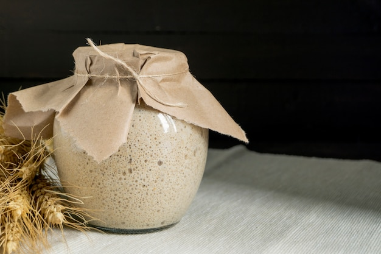

Sourdough

Description
Baking sourdough bread for me is not only about the food. It's also about the
process of baking and caring for your sourdough. In this recipe I
will share with you my way of making my first sourdough and how I take care
of it :)
Starting your first sourdough
Ingredients
- 1 glass jar (minimum 400ml)
- 1 kitchen cloth
- 100g rye flour (full grain if possible)
- 100ml water
Steps
- Mix water and rye flour in the glass jar. For stirring I prefer to use
wooden spoons, but everything works.
- Cover the jar with the kitchen cloth and let it rest in a warm spot for
some days. You can check in between if things are starting to become
bubbly.
- The sourdough is ready to use when it has grown to about twice its original
size.
- Let's bake some bread!
- When you're done with the starter close the lid of the jar and put it in
your fridge. Now you only need to feed it every
7-10 days.
Feeding your sourdough
Ingredients
- 2 Ts rye flour (full grain if possible)
- 2 Ts water
Steps
- Mix water and rye flour with your sourdough.
- Cover the jar with the kitchen cloth and let it rest in a warm spot for
6-8 hours.
- The sourdough is ready to use when it has grown to about twice its original
size.
- Let's bake some bread!